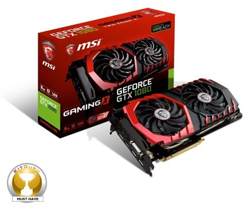
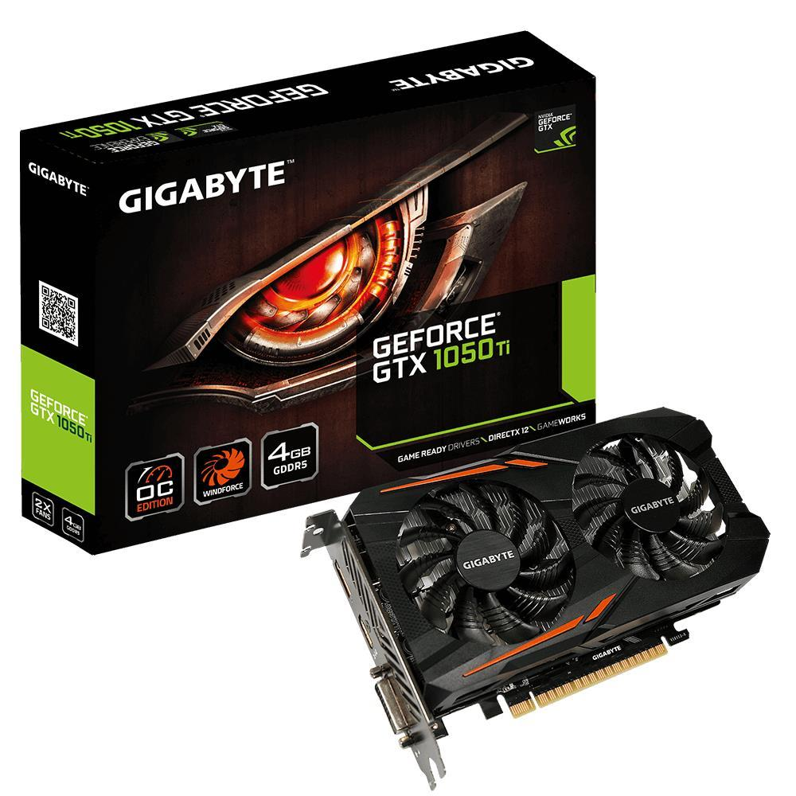

Hovedpoenget med en GPU (graphics prosessor unit) er å kunne fort manipulere og endre minne for å raskt kunne skape bilder
for en skjerm. GPU'er i dag bruker mesteparten av transistorene sine på å gjøre beregnininger relatert til 3D-grafikk,
noe vi har mye nytta av i dag. Dette får vi bruk for i alt fra spill, arkitektur og annen bruk av 3D-modeller,
som vi gjerne skal ha i virkeligheten, som hus.
Tilbake til hovesiden